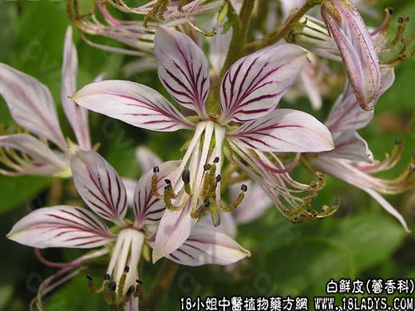

【中药概述】
白鲜皮为芸香科草本植物白鲜皮的根皮。苦、寒。归肺经。
1．湿热疮毒、风疹、疥癣及皮肤瘙痒等，常与荆芥，防风，银花，蝉蜕，赤芍，生地等清热、疏风、凉血药同用，以增强解毒、止痒之效（水煎服或水煎洗）。
2．湿热阴痒、带下、黄疸小便不利等。治湿热阴痒带下等，可与苦参，蛇床子，川椒等煎水外洗，亦可与茵陈，车前子，赤芍等配伍。
【药效鉴别】
白鲜皮与苦参作用相近，相配可增强清热燥湿祛风止痒作用，均可治疗湿热黄疸及湿热疮疡。
【药理作用】
1.抗菌作用：水浸液用试管稀释法，1:20对堇色毛癣菌、许兰黄癣菌、铁锈色小孢子菌、红色表皮癣菌等皮肤真菌均有抑制作用。
2．对心血管系统的作用：白癣碱小剂量能兴奋离体蛙心，使心肌张力增加，心脏每搏输出量及每分钟输出量均增加。
【化学成分】
含白鲜皮碱、折鲜皮内酯、谷甾醇、胡芦巴碱、黄柏酮酸等。
【用量用法】
9——20g，水煎服，或入剂。外用适量。
【使用注意】
虚寒患者慎用。